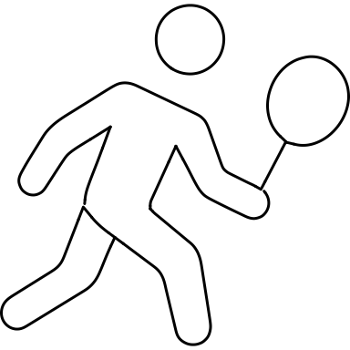
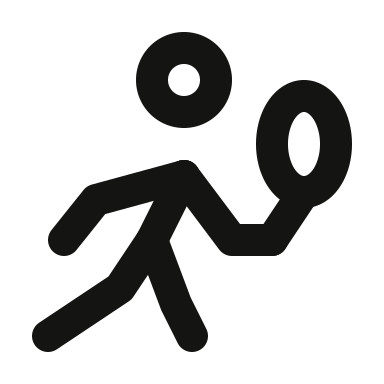
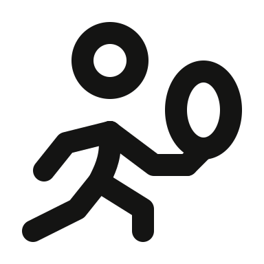

20 revisions · gpt-6 · model valid · full gate pass · zero warnings
1. solo/tennis-forehand-player

Original

Rejected

Fixed lightFixed dark
Tennis player: rejected head floats off a sloping torso and the racket is too small. Enlarge head/racket, align neck tangent, preserve forehand stance. Rebuilt with a larger head, oval racket and curved torso.
Racket strings and fine anatomy omitted at48; head, forehand arm and stance retained.
Fidget spinner: rejected outline is angular and lacks all three outer bearing holes. Restore smooth three-lobe outline and bearings. Restore smooth three-lobed body and four bearing marks; small holes simplify to dots for spacing.
Three small bearing holes and central bearing reduced to four dots to fit the three-lobed body.
Propeller: rejected lower blades are angular and hub oversized. Use round blade ends and balanced blade lengths. Rebuild blades with smooth rounded ends and a smaller central hub.
Blade thickness varies slightly on the integer grid; three rounded blades and hub retained.
Trees: rejected rear trees have no trunks and read as mountain peaks. Restore layered tree silhouettes and three trunks. Restore three centered trunks, with a tall narrow foreground tree and smaller rear canopies.
Fine branch steps omitted; three pointed canopies and three centered trunks retained.
Goat: rejected horns are short hooks, face is broad and the third eye a dot. Restore curling horns, tapered muzzle and a distinct third eye. Restore long curved horns and taper the brow and muzzle around three separated eyes.
Third eye and side eyes use dots; horn interiors omitted.
Tuxedo: rejected bow is oversized and jacket cropped into a box. Restore narrow bow and long tapered jacket/lapels. Rebalance bow to a wider, shallower form and give the long lapels clear space inside the jacket.
Fine jacket taper omitted for clearance; bow, lapels and seam retained.
Hand-holding pair: rejected outside arms are rigid horizontal bars and heads too small. Restore sloping arms, larger heads and a joined central hand. Enlarge both heads and slope the outside arms while keeping symmetric joined hands.
Filled/angular body regions reduced to coherent round-ended limbs.
Children: rejected heads have no hairlines and resemble rings. Restore parted hair and a readable ponytail. Add short swept hairlines and a curved ponytail while keeping the circular heads at a shared tangent.
Parted hair reduced to short swept hairlines; circular heads and ponytail retained.
Intersecting circles: rejected circles are tall ovals. Restore rounder overlapping circles and clear central lens. Rebuild equal rounder lobes and a wide central lens, meeting at two shared intersection nodes.
Exact circle intersections approximated with smooth integer-grid cubic spans; equal round outer quadrants and central lens retained.
Envelopes: rejected back envelope lacks its flap and front corners are square. Restore two flap cues and rounded sheet corners. Round the front corners and restore a rear flap descending behind the foreground envelope.
Tiny rear lower-corner detail omitted behind the foreground envelope.
Capped reader: rejected face resembles a barred circle and book is flat-bottomed. Restore cap silhouette and a deeper open-book fold. Give the cap a domed crown over a circular jaw and deepen the book pages around a central fold.
Text on pages and short neck line omitted; cap, circular jaw, shoulders and open book retained.
Crowned visitor: rejected tent looks like a bottle and the shoulders are detached too far. Restore broad tent roof and body and closer natural bust. Rebuild a broad-roofed tent beside a symmetric, closely joined crowned bust.
Tiny collar seam omitted; tent roof/body, crown, face and shoulders retained.
Dog walker: rejected bag is a ring and dog is a bare angular stick. Restore hanging bag shape, dog head/back, and natural person proportions. Restore a slim hanging bag and recognizable dog back and upright head.
Dog eye, tail and fine anatomy omitted; bag, walker, leash and dog stance retained.
Horned dragon: rejected head is a long rectangle and the body an open squiggle. Restore a rounded snout and coherent S-curve through the curled body. Restore rounded snout and a smooth open S body with two distinct horns.
Inner tail outline omitted; rounded head, two horns and flowing S body retained.
Dragon emblem: rejected dragon looks like a circular letter G. Restore pointed dragon head and stronger curved wing/tail silhouette. Restore curved inner neck and pointed beak while opening the narrow wing-to-neck gap.
Fine tail notches omitted; pointed inner head and round curled wing retained.
Fox flame: rejected emblem is an open loop without fox head. Restore pointed ear, snout notch, flame crest and closed curling silhouette. Restore a pointed fox ear and snout at the opening of the curled flame.
Secondary flame tips simplified; fox ear/snout and curled flame retained.
Field rows: rejected boundary follows rather than crosses the main rows, reading as generic stripes. Restore intersecting hillside and arcing crop rows. Restore arcing crop rows and a separate hillside, joining at a shared node.
Small left hillside row fragment omitted; opposing hill and three sweeping crop rows retained.
Unrolled paper: rejected curl looks like a folded corner; top paper lip is absent. Restore a full-height roll and separated top edge. Make the rolled paper span the full height and restore a top paper lip.
No defining part omitted; paper lip and full-height roll retained.
Guitar: rejected waist is pinched, neck blocky and soundhole a solid dot. Restore smooth body transitions and visible soundhole. Widen the waist around a visible soundhole, and smooth the body and headstock.
Tuning pegs, strings and bridge omitted to keep soundhole and body clear.
Wrench: rejected head has angular shoulders and handle is too short. Restore round head-to-handle transitions and a longer slim grip. Round the head shoulders and lengthen the handle below the wide open jaw.
No defining part omitted; open jaw, rounded shoulders and upright handle retained.